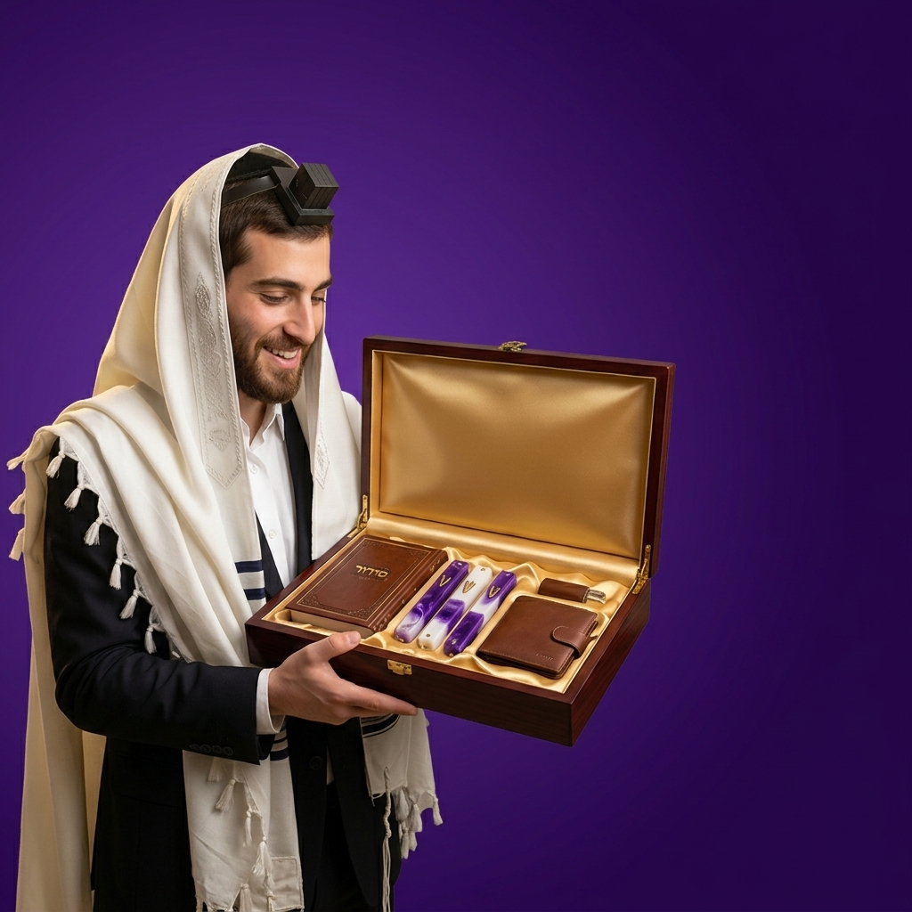
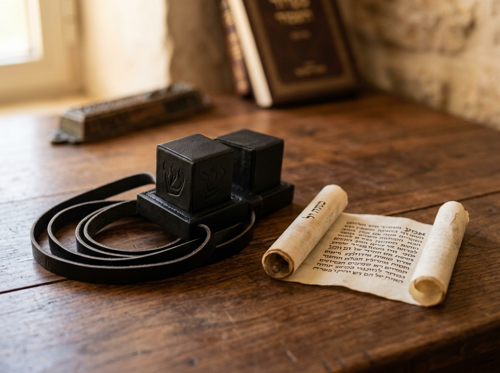
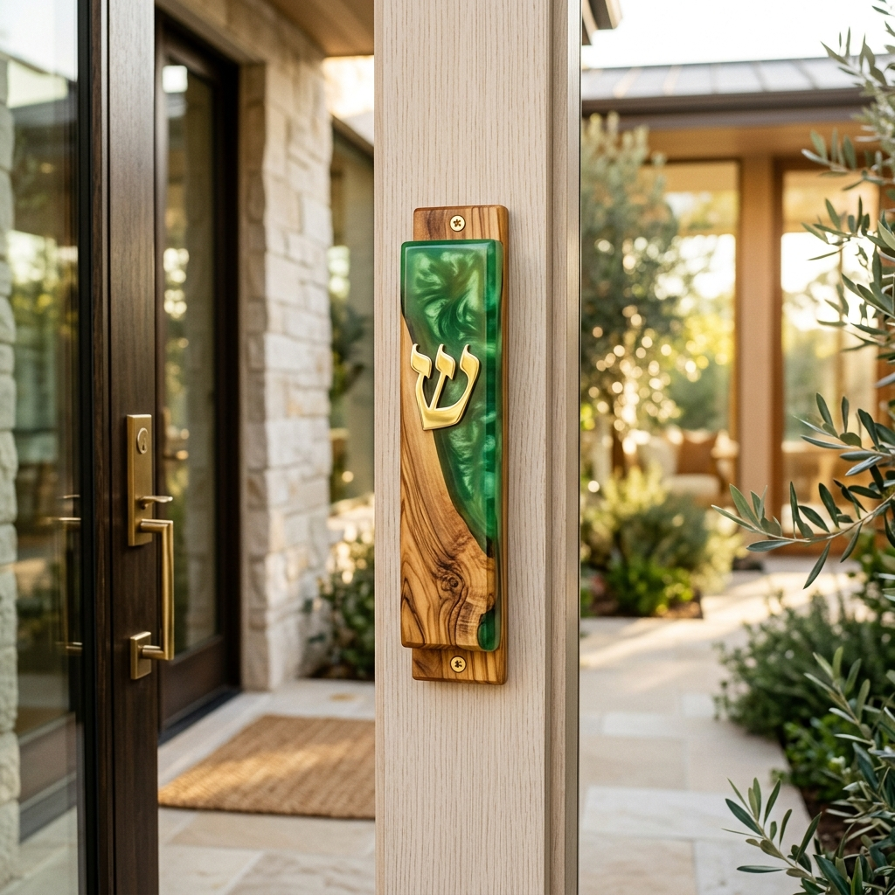
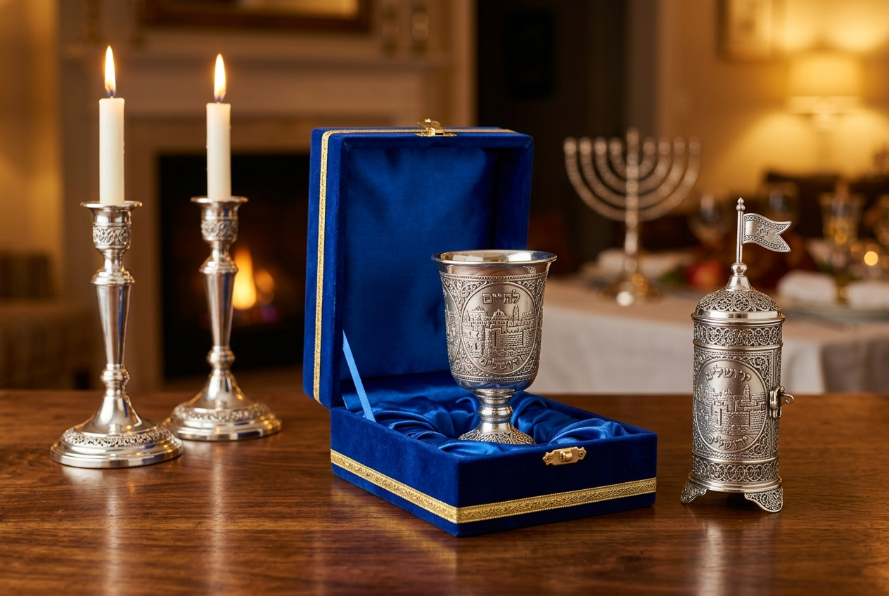

![עוז יודאיקה]()

קטלוג מלא
כל המוצרים
287 מוצרים בחנות

100% כשר
תשמישי קדושה וסת"ם
תפילין, מזוזות וספרי תורה

עיצוב יוקרתי
בתי מזוזה מעוצבים
אפוקסי, אלומיניום ועץ

תפדניות וקטיפה
תיקים לטלית ותפילין
כיסויים וסטים יוקרתיים

מהדורות עור
ספרי קודש
סידורים, תהילים וחומשים

100% עור נאפה
ארנקים לגבר
ארנקי עור, מגנט וכרטיסים

בר מצווה ואירועים
מתנות ויודאיקה
תמונות זכוכית, בשמים וסטים מתנה